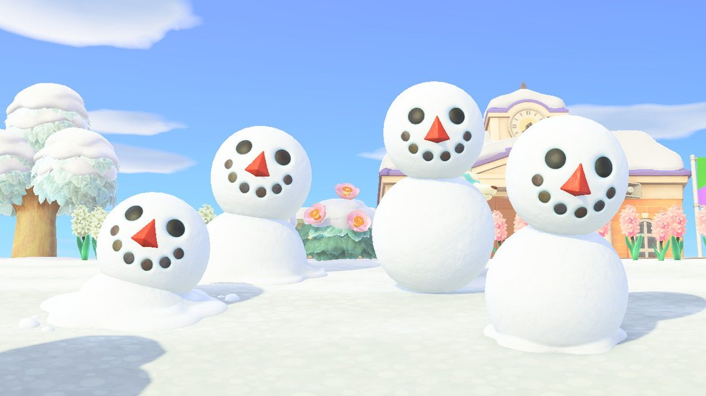

Snowflake season: mid-December to late February, catch snowflakes and build snowboys
How to catch snowflakes, how to build a perfect snowboy, and all 26 DIY recipes (including the 16 frozen-series recipes)
In winter, snow covers your island and snowflakes drift through the air. In the Northern Hemisphere they fall from December 11 to February 24, and in the Southern Hemisphere from June 11 to August 24, a little over two months.
This season has the most DIY recipes of any, 26 in total. 16 of them, the frozen series, only come from snowboys; balloons never drop them, so you'll need to build snowboy after snowboy on snowy days. Crafting all of them takes 161 snowflakes and 16 large snowflakes.

Snowboys built on an island (Image: Nookipedia)
01When
All dates are in-game dates. The Southern Hemisphere runs half a year behind the north. The snowballs you use to build snowboys only appear during this window too.
| Hemisphere | Starts | Ends |
| Northern | December 11 | February 24 |
| Southern | June 11 | August 24 |
In the Northern Hemisphere, ornament season (December 15 to January 6) falls in the middle of snowflake season, so you can catch snowflakes while you're shaking cedar trees for ornaments.
02How to catch snowflakes
Snowflakes float through the air; aim your net and swing to catch them. Snowflakes sell for 200 Bells each and stack up to 10 per pocket slot.
Large snowflakes can't be caught — only a perfect snowboy gives them out, and each one sells for 2,500 Bells. Every frozen-series recipe needs 1 large snowflake, so they're far more precious than regular snowflakes.
TipSnowflakes and large snowflakes can go in storage. Stock up near the end of the season so you can keep crafting after it's over. And if you haven't learned every recipe for the season yet, no worries — you can pull them back out once you do.
03Building a perfect snowboy
Two snowballs appear on your island each day, just enough for one snowboy. They won't spawn while your island's gates are open, so build snowboys when your gates are closed.
Push a snowball across the snow and it gets bigger as it rolls. Tom Nook's trick: roll the bottom one a bit bigger first, then push the smaller one into it from behind. Both need to be big, with the head just a bit smaller than the body, for a perfect snowboy.
A snowball will break if it hits something while rolling, falls into water or a hole, rolls off a cliff, or gets hit by a shovel or axe. If one breaks, don't worry: go in and out of a building once, and the snowball may reappear.
What a perfect snowboy gives you
A perfect snowboy gives you 1 large snowflake and 1 frozen-series DIY recipe. Your very first snowboy is more forgiving and will reward you no matter how it turns out.
A snowboy lasts 4 days on your island, and if you chat with him on each of the next 3 days, he'll give you another large snowflake each time. Once you've learned every frozen-series recipe, perfect snowboys only give large snowflakes.
04Where the DIY recipes come from
Snowboys: this is the only way to get the 16 frozen-series recipes. It's one snowboy a day, so try to build one every day during snowy season.
Shooting down balloons: the other 10 recipes come from balloons. During snowflake season, balloons floating overhead drop this season's DIY recipes until you've learned them all.
Visiting Resident Services on the first day of the season: on December 11 in the north or June 11 in the south, Tom Nook or Isabelle will give you the snowflake wreath. You only get it on the first day.
Missed it? Catch up on Kapp'n's boat
Kapp'n at the pier will take you out to sea once a day for 1,000 Nook Miles. Every so often, he'll drop you on an island stuck in a particular season, and the winter island is one of them; each seasonal island has about a 3% chance. On that island you can catch snowflakes, and message bottles on the beach may hold this season's DIY recipes.
The odds are low, so this is really just luck. There's also a catch: your own island has to have gone through this season at least once before you can be taken to the matching island. Once you've decorated your hotel's first VIP room, Kapp'n will take you on an extra trip each day (for 100 hotel tickets), which gives you a slightly better shot.
05All 26 DIY recipes
10 from balloons and Resident Services
| DIY recipe | Materials |
| snowflake wreath From Resident Services on the first day | 4 snowflakes |
| snowflake wall | 12 snowflakes |
| iceberg wall | 10 snowflakes |
| iceberg flooring | 10 snowflakes |
| ski-slope wall | 8 snowflakes |
| ski-slope flooring | 8 snowflakes |
| falling-snow wall Added in 1.6 | 3 snowflakes, 10 stones |
| frozen floor tiles Added in 2.0 | 8 snowflakes |
| frozen fence Added in 2.0 | 5 snowflakes |
| snowflake pochette | 6 snowflakes |
16 from snowboys (frozen series)
| DIY recipe | Materials |
| frozen bed | 1 large snowflake, 10 snowflakes |
| frozen chair | 1 large snowflake, 3 snowflakes |
| frozen table | 1 large snowflake, 8 snowflakes |
| frozen counter | 1 large snowflake, 5 snowflakes |
| frozen partition | 1 large snowflake, 6 snowflakes |
| frozen pillar | 1 large snowflake, 3 snowflakes |
| frozen arch | 1 large snowflake, 10 snowflakes |
| frozen tree | 1 large snowflake, 8 snowflakes |
| frozen sculpture | 1 large snowflake, 4 snowflakes |
| frozen-treat set | 1 large snowflake, 1 snowflake |
| three-tiered snowperson | 1 large snowflake, 6 snowflakes, 2 tree branches |
| frozen mini snowperson Added in 2.0 | 1 large snowflake, 2 snowflakes |
| ice wall | 1 large snowflake, 8 snowflakes |
| ice flooring | 1 large snowflake, 8 snowflakes |
| snowperson head | 1 large snowflake, 5 snowflakes |
| ice wand | 1 large snowflake, 3 star fragments |
Crafting all 26 takes 161 snowflakes and 16 large snowflakes, plus 10 stones, 3 star fragments, and 2 tree branches.
06What to make first
The frozen bed, frozen chair, and frozen table set: frozen-series furniture is made of clear ice and can be customized in different colors once you've made it. Put together a whole ice room and it looks gorgeous. Each piece needs 1 large snowflake, so just craft each one as you learn it.
Ice wall + ice flooring: the walls and floor for your ice room. These need large snowflakes too.
Snowperson head: a snowperson's head you can wear. Great fun for winter photos.
Frozen fence: 5 snowflakes per batch, and it gives your outdoor spaces a real wintry feel.
Snowflake wreath: the one you get on the first day. It takes just 4 snowflakes.

A room decorated with frozen-series furniture (Image: Nookipedia)
07Version history
The falling-snow wall DIY recipe was added in 1.6; the frozen fence, frozen floor tiles, and frozen mini snowperson were added in 2.0. Kapp'n's boat tours were added in 2.0; the extra daily trip after decorating your hotel's first VIP room was added in 3.0.
Nook Circle · Search "Nook Circle" on the App Store